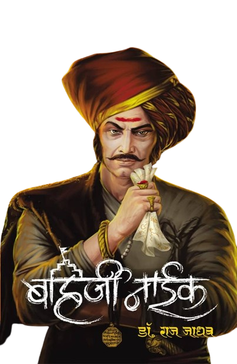
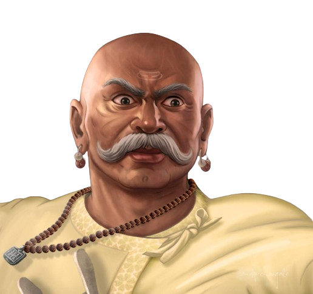
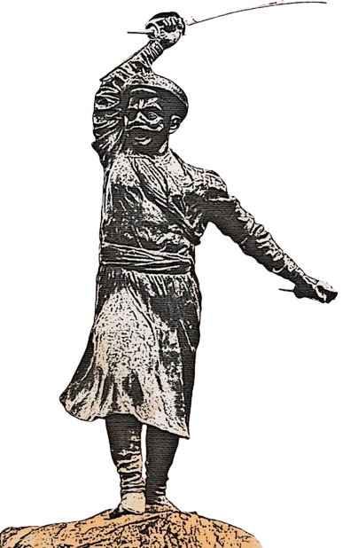
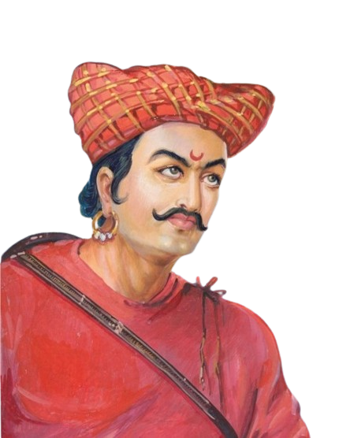
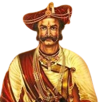

<div class="container-fluid">
  <div class="row">
    <div class="card">
    
      <div class="row" data-aos="fade-right" data-aos-duration="3000" >
        <div class="col-xl-8 col-lg-8 col-md-8 col-sm-6 col-xs-6">
          <p class="head">बहिर्जी नाईक -</p>
          <p class="text">
            बहिर्जी नाईक हे छत्रपती शिवाजी महाराजांच्या सैन्यात गुप्तहेर आणि
            लष्करी कमांडर होते. ते रामोशी समाजातील होते, ज्यांचे सदस्य त्यांच्या
            लवचिकतेसाठी आणि बलवान लढाऊ म्हणून ओळखले जात होते. बहिर्जी नाईक हे
            शिवाजी महाराजांचे गुप्तचर प्रमुख म्हणून त्यांच्या पद्धतींमध्ये
            निर्विवादपणे यशस्वी होते. त्यांची समाधी सध्या सांगली जिल्ह्यातील
            खानापूर तालुक्यातील भूपाळगड (बानूरगड) येथे आहे. त्यांचा जन्म शिंगावे
            नाईक ता. नगर, अहमदनगर या गावी झाला. १६९२ मध्ये बहिर्जीचा मुलगा
            तुकोजी नाईक याने राममंदिर आणि शिंगावे गावाची बाहेरची सीमा बांधली.
            त्यांच्या नावाचा शिलालेख असलेला एक दगड राममंदिरात ठेवण्यात आला आहे.
            बहिर्जींच्या सुरुवातीच्या जीवनाविषयी फारसे माहिती नाही आणि तेव्हाही
            नव्हते. पण त्यांनी महाराजांच्या सैन्यात गुप्तहेर म्हणून केलेल्या
            मोहिमा आणि साहसांनी मराठा साम्राज्याच्या यशात मोठा हातभार लावला.
            बहिर्जी त्यांच्या मोहिमांच्या प्रत्येक पैलूंबद्दल तपशीलवार माहिती
            गोळा करण्यात तरबेज होते आणि छत्रपती शिवाजींच्या अनेक आश्चर्यकारक
            पराक्रमांमध्ये श्रेय बहिर्जी नाईक आणि त्यांच्या लोकांचा अत्यंत
            महत्त्वाचा वाटा होता.
          </p>
        </div>
        <div
          class="col-xl-4 col-lg-4 col-md-4 col-sm-6 col-xs-6 d-flex justify-content-center"
        >
          
        </div>
      </div>
   
      <div class="row" data-aos="fade-left" data-aos-duration="3000">
        <div
          class="col-xl-4 col-lg-4 col-md-4 col-sm-6 col-xs-6 d-flex justify-content-center">
          
        </div>
        <div class="col-xl-8 col-lg-8 col-md-8 col-sm-6 col-xs-6">
          <p class="head">बाजी प्रभू देशपांडे -</p>
          <p class="text">
            बाजी प्रभू देशपांडे हे एक मराठा साम्राज्याचे शूर योद्धे होते.
            घोडखिंडीतील लढाईत यांनी अतुलनीय पराक्रम गाजवला व छत्रपती शिवाजी
            महाराज विशाळगडापर्यंत पोहोचेपर्यंत शत्रुसैन्याला खिंडीत रोखून ठेवले.
            बाजीप्रभूंचा जन्म चांद्रसेनीय कायस्थ प्रभू परिवारामध्ये झाला.बाजी
            प्रभू देशपांडे पुणे जिल्ह्यातील भोर तालुक्यातील हिरडस मावळातले
            पिढीजात देशपांडे होते. बाजी प्रभू हे हिरडस मावळचे वतनदार असणाऱ्या
            बांदलांचे दिवाण होते. परंतु बाजींचे प्रशासकीय कौशल्य आणि शौर्य पाहून
            श्रीमंत छत्रपती शिवाजी महाराजांनी हे अष्टपैलू व्यक्तिमत्त्व आपलेसे
            करून घेतले. बाजींनीही स्वराज्यासाठी आपली निष्ठा श्रीमंत छत्रपती
            शिवाजी महाराजांना समर्पिली. बाजीप्रभू देशपांडे हे पराक्रमी लढवय्ये
            तर होतेच, तसेच ते त्यागी, स्वामिनिष्ठ, करारी, कोणत्याही आमिषाला बळी
            न पडणारे असे होतेसिद्दी जौहरने पन्हाळ्याला घातलेल्या वेढ्यातून
            सुटण्यासाठी महाराजांना घेऊन बाजी विशाळगडाकडे निघाले होते.बाजीप्रभू
            हे बांदल यांचे सरदार होते. रायाजी बांदल, फुलाजी प्रभू आणि सुमारे ६००
            बांदल मावळे यावेळी महाराजांच्या समवेत होते. त्या वेळी आपली फसवणूक
            झाली हे लक्षात येऊन विजापुरी सैन्य त्यांचा पाठलाग करीत होते. पुढचा
            धोका लक्षात घेऊनच वडीलकीच्या अधिकाराने बाजींनी महाराजांना
            विशाळगडाकडे पुढे जाण्यास सांगितले. बाजी व फुलाजी हे दोघे बंधू
            गजापूरच्या खिंडीत (घोडखिंडीत) सिद्दीच्या सैन्यासाठी महाकाळ म्हणून
            उभे राहिले. हजारोंच्या सैन्याला ३०० मराठी मावळ्यांनी रोखले होते. सतत
            २१ तास चालून शरीर थकलेल्या स्थितीत असतानाही बाजी आणि त्यांच्या
            मावळ्यांनी मोठ्या हिंमतीने ६ ते ७ तास खिंड लढविली आणि पराक्रमाची
            शर्थ केली. ही खिंड कोल्हापूर जिल्ह्यात आहे. सिद्दी मसूदचे सैन्य
            अडविताना कामी आलेले मराठी मावळे, धारातीर्थी पडलेले बंधू फुलाजी, जखमी
            झालेले स्वतःचे शरीर या कशाचेही भान बाजींना नव्हते. महाराज विशाळगडावर
            सुखरूप पोहोचले याचा इशारा देणाऱ्या तोफांच्या आवाजाकडे त्यांचे कान
            होते. तोफांचा आवाज ऐकेपर्यंत ते दोन्ही हातात तलवार घेऊन प्राणांची
            बाजी लावून लढत होते. खिंडीमध्ये महादेवाचा महारुद्र अवतार प्रकटलेला
            होता. तोफांचे आवाज ऐकल्यावर कर्तव्यपूर्तीच्या समाधानाने त्यांनी
            प्राण सोडले. ही घटना दिनांक १३ जुलै, १६६० रोजी घडली. मराठी
            सैनिकांच्या अभूतपूर्व अशा पराक्रमाने आणि बाजींसारख्या
            स्वराज्यनिष्ठांच्या पवित्र रक्ताने घोडखिंड पावन झाली म्हणूनच तिचे
            नाव पावनखिंड झाले. बाजी - फुलाजी बंधूंवर विशाळगडावर, महाराजांच्या
            उपस्थितीत अंत्यसंस्कार करण्यात आले. बाजीप्रभू व फुलाजी यांची समाधी
            विशाळगडावर आहे. तसेच पन्हाळगडावर बाजीप्रभूंचा पूर्णाकृती पुतळा
            उभारण्यात आलेला आहे.
          </p>
        </div>
      </div>
      <div class="row" data-aos="fade-right" data-aos-duration="3000">
        <div class="col-xl-8 col-lg-8 col-md-8 col-sm-6 col-xs-6">
          <p class="head">तानाजी मालुसरे-</p>
          <p class="text">
            तानाजी मालुसरे (१६२६, गोडवली, सातारा - ४ फेब्रुवारी १६७० सिंहगड
            किल्ला) हे शिवाजी महाराजांच्या सैन्यातील एक सुभेदार व शिवाजी
            महाराजांचे बालपणीचे सवंगडी होते. तानाजीने महाराष्ट्रात शिवाजी
            महाराजांच्या स्वराज्य स्थापनेपासूनच अनेक महत्त्वाच्या घडामोडीत सहभाग
            घेतला होता... नरवीर तानाजी मालुसरे यांचे एक स्मारक रायगड मधील महाड
            तालुक्यामध्ये असणाऱ्या आंबेशिवथर गावामध्ये सर्व ग्रामस्थांच्या तसेच
            भारतीय लष्करामध्ये कार्यरत असणाऱ्या सैनिकांनी व गावातील शहरात
            असणाऱ्या नोकरदार वर्गाने पुढाकार घेऊन आपल्या वैयक्तिक निधीतून उभे
            करण्यात आले आहे. हे स्थान महाड पासून 30 किलोमीटर अंतरावर निसर्ग
            स्थानिद्यात आहे.तानाजींचा मृतदेह किल्ल्यावरून ज्या मार्गाने कोकणात
            नेला त्या मार्गाला मढे घाट म्हणतात. स्वराज्यातील रायगडाच्या बाजूला,
            कोकण पट्ट्यात असणाऱ्या स्थानिक दंगलखोर जमातींचा बंदोबस्त करण्याची
            जबाबदारी महाराजांनी तानाजींवर सोपविली होती. त्यासाठीच या भागातील
            उमरठ या गावात येऊन ते राहिले होते. आपलेपणाने वागून ह्या भागातील
            लोकांना स्वराज्याच्या कार्यात त्यांनी सहभागी करून घेतले.सिंहगडची
            लढाई फेब्रुवारी १६७० रोजी सिंहगड किल्ल्यावर (त्या काळात कोंधना
            म्हणून ओळखल्या जाणाऱ्या कोंढिन्या)रात्री दरम्यान झाली. मराठा
            साम्राज्याचा सेनापती तानाजी मालुसरे आणि सिंहगडचा राजपूत किल्लेदार
            उदयभानसिंग राठोड यांच्यात लढाई झाली. वेढा घेण्याच्या वेळी तानाजीने
            यशवंती नावाच्या घोरपडच्या मदतीने किल्ल्याकडे जाणाऱ्या एका उंच खडकावर
            पॊचला. गडावर चढताना मराठ्यांना पहारेकऱ्यांनी रोखले होते आणि यावेळी
            पहारेकरी व काही घुसखोर यांच्यात लढाई झाली. उदयभान आणि तानाजी एकाच
            युद्धात गुंतले. उदयभानने तानाजीची ढाल फोडली आणि त्याची भरपाई केली.
            त्याने त्याच्या शेजारीच आपल्या पगडीचे कपड लपेटले आणि लढाई सुरूच
            ठेवली, लवकरच थोड्यावेळ उदयभानने त्याचा कवच तोडले. पण तानाजीने त्याचा
            सामना केला, ते दोघे युद्धामध्ये मारले गेले. दुसऱ्या मार्गावरून
            किल्ल्यावर प्रवेश केल्यावर मराठा सैन्याने किल्ला ताब्यात घेतला.
          </p>
        </div>
        <div
          class="col-xl-4 col-lg-4 col-md-4 col-sm-6 col-xs-6 d-flex justify-content-center"
        >
          
        </div>
      </div>
      <div class="row" data-aos="fade-left" data-aos-duration="3000">
        <div
          class="col-xl-4 col-lg-4 col-md-4 col-sm-6 col-xs-6 d-flex justify-content-center"
        >
          
        </div>
        <div
          class="col-xl-8 col-lg-8 col-md-8 col-sm-6 col-xs-6"
        >
          <p class="head">मुरारबाजी देशपांडे-</p>
          <p class="text">
            मुरारबाजी देशपांडे (जन्मदिनांक अज्ञात - - १६ मे, १६६५) हे मराठा
            सैन्यातील वीर होते. महाड तालुक्यातील किंजळोली हे मुरारबाजी
            देशपांडेंचे मूळ गाव. इ.स. १६६५ साली मोगलांनी पुरंदर किल्ल्याला
            घातलेल्या वेढ्यात त्यांनी मराठा सैन्याचे नेतृत्व करत कणखर झुंज दिली.
            मात्र १६ मे, १६६५ रोजी मोगलांनी केलेल्या सुलतानढव्याचा प्रतिकार
            करताना त्यांना वीरमरण आले.जावळीच्या चंद्रराव मोऱ्यांशी झडलेल्या
            संघर्षात श्रीमंत छत्रपती शिवाजीराजे भोसले यांना मोऱ्यांच्या
            सैन्यातून लढणाऱ्या मुरारबाजींच्या युद्धकौशल्याचे विलक्षण कौतुक
            वाटले. स्वराज्यनिर्मितीच्या लढ्यात अशा शूर मावळ्याचा उपयोग होईल हे
            जाणून जावळीच्या विजयानंतर श्रीमंत छत्रपती शिवाजी महाराजांनी
            मुरारबाजी यांना मराठा सैन्यात दाखल करून घेतले. स्वराज्यावर
            औरंगजेबाचे सरदार मिर्झाराजे जयसिंह ह्यांच्या रूपात नवीन संकट घोंगावत
            होते. मिर्झाराजांनी ज्याप्रकारे महाराष्ट्रावर आक्रमण केले, त्यापुढे
            मराठी सैन्याचा टिकाव लागणे फारच अवघड होते, या नामुष्कीची चाहूल
            लागताच श्रीमंत छत्रपती शिवाजी महाराजांनी मिर्झाराजांसोबत बोलणी सुरू
            केली पण मिर्झाराजांनी महाराजांना दाद दिली नाही. त्यानंतर मोगल सरदार
            दिलेरखानाने इ.स. १६६५ साली घातलेल्या पुरंदराच्या वेढ्यात
            मुरारबाजींनी गडावरील सैन्यास घेऊन किल्ला झुंजवायची शर्थ केली. या
            कठीण परिस्थितीमधेदेखील मुरारबाजी देशपांडे (महाडकर) यांनी पुरंदर फार
            शर्थीने लढवला. अवघ्या सातशे मावळ्यांनिशी दिलेरखानाच्या पाच हजार
            फौजेच्या तोंडचे पाणी पळवणाऱ्या मुरारबाजींचा या लढाईत अंत झाला.
          </p>
        </div>
      </div>
      <div class="row" data-aos="fade-right" data-aos-duration="3000">
        <div class="col-xl-8 col-lg-8 col-md-8 col-sm-6 col-xs-6">
          <p class="head">नेताजी पालकर -</p>
          <p class="text">
            नेतोजी पालकर हे दीर्घ काळ छत्रपती शिवाजी महाराजांच्या राज्याचे
            सरनौबत होते. त्यांना 'प्रतिशिवाजी' म्हणजेच 'दुसरा शिवाजी' असेही
            म्हटले जायचे. नेतोजी हे मूळचे पुणे जिल्ह्यातील शिरूर चे परंतु
            त्यांचे वडील रायगड जिल्ह्यातील खालापूर येथे स्थायिक झाले होते
            नेताजींचा जन्म खालापूर येथील चौक या गावी झाला.त्यांनी अनेक युद्धे
            गाजवली.. अफजलखानाच्या वधाच्या वेळी अफजलखानाच्या सैन्याला हुसकावून
            लावण्यात नेतोजींनी सिंहाचा वाटा उचलला होता. मात्र पुरंदरच्या तहानंतर
            श्रीमंत छत्रपती शिवाजी महाराजांनी वादविवादाचा बनाव करून त्यांना
            मोगलाकडे पाठविले, त्यांनी आदीलशहावर आक्रमन केले. मुघलांनी त्यांचे
            धर्मांतर केले. नेतोजींना अरबस्तानात पाठविले.तसेच त्यांना नजरकैदेत
            ठेवले. यामुळे ते स्वराज्यापासून दूर होते. त्यांनी मुघलांची चाकरी
            केली, पण नऊ वर्षांनी नेतोजी पुन्हा स्वराज्यात आले. पण स्वराज्यात
            पुन्हा आल्यावर श्रीमंत छत्रपती शिवाजी महाराजांनी पुन्हा योग्य विधी
            पार पाडून त्यांना परत हिंदू धर्मात प्रवेश दिला, व त्यांच्या मुलाचा
            जानोजीचा स्वतःच्या मुलीशी विवाह करून दिला. श्रीमंत छत्रपती शिवाजी
            महाराजांनंतर त्यांनी श्रीमंत छत्रपती संभाजी महाराजांचीही चाकरी केली
            होती. पुरंदर तहानंतर श्रीमंत छत्रपती शिवाजी महाराज, मिर्झा राजे,
            सरसेनापती नेतोजी पालकर आणि दिलेरखान विजापूरवर चालून गेले. तेथे
            आदिलशाही सेनापती सर्जाखान याच्यासमोर ते चौघे अपयशी ठरत होते. आणि
            त्या अपयशाचे खापर दिलेरखान महाराजांवरच फोडू लागला. म्हणून
            विजापूरकरांचा पन्हाळगड जिंकण्यासाठी महाराज विजापुरहून परत आले,
            महाराजांनी रात्रीच गडावर छापा घातला. आदिलशाही किल्लेदार बेसावध असेल
            अशी महाराजांची खात्री होती पण किल्लेदार सावध होता. त्यात सरसेनापती
            नेतोजी पालकर वेळेवर पोहोचून महाराजांना कुमक पोहोचवू शकले नाहीत. यात
            महाराजांचा पराभव झाला आणि सुमारे १००० माणसे मारली गेली. महाराज
            नेतोजींवर चिडले आणि त्यांनी नेतोजीला पत्राद्वारे "समयास कैसा पावला
            नाहीस" असे म्हणून बडतर्फ केले. मग नेतोजी विजापूरकरांना जाऊन मिळाले.
            महाराज आग्ऱ्याच्या भेटीस निघून गेल्यानंतर मिर्झाराजांनी नेतोजी
            पालकरांना विजापूरकरांकडून मुघलांकडे वळवले.
          </p>
        </div>
        <div
          class="col-xl-4 col-lg-4 col-md-4 col-sm-6 col-xs-6 d-flex justify-content-center"
        >
          
        </div>
      </div>
      <div class="row" data-aos="fade-left" data-aos-duration="3000">
        <div
          class="col-xl-4 col-lg-4 col-md-4 col-sm-6 col-xs-6 d-flex justify-content-center"
        >
          
        </div>
        <div class="col-xl-8 col-lg-8 col-md-8 col-sm-6 col-xs-6">
          <p class="head">येसाजी कंक-</p>
          <p class="text">
            येसाजी कंक यांचा जन्म भुतोंडे,भोर येथे राजगडच्या पायथ्याशी इ.स.१६२६
            साली क्षत्रिय मराठा कुटुंबात झाला होता. ते कंक कुळातील होते.
            त्यांच्या वडिलांचे नाव दादोजी कंक असे होते.येसाजीराव हे कंक निकुंभ
            कुलीन मराठा सरदार होते. ते छत्रपती शिवाजी महाराजांच्या सैन्यात पाऊल
            ठेवणारे सैनिक होते. ते गनिमी युद्धाच्या तंत्रात तज्ज्ञ होते.
            प्रतापगडच्या लढाईत त्यांची प्रमुख भूमिका होती. त्यांनी मद्यधुंद
            हत्तीबरोबरही लढा दिला. शिवाजी महाराजांच्या लहानपणापासून मृत्यूपर्यंत
            ते फार स्थानिक होते. ते शिवाजी महाराजांचे विश्वासू सहकारी आणि सहकारी
            होते. छत्रपती शिवराय, धर्मवीर छत्रपती शंभूराजे, छत्रपती राजारामराजे
            व छत्रपती शाहू राजे अशा ४ छत्रपतींना निष्ठेने साथ देणारे एकमेव
            सरनौबत म्हणजे श्रीमंत येसाजीराव कंक होते.
          </p>
        </div>
      </div>
      <div class="row" data-aos="fade-right" data-aos-duration="3000">
        <div
          class="col-xl-8 col-lg-8 col-md-8 col-sm-6 col-xs-6"
        >
          <p class="head">प्रतापराव गुजर -</p>
          <p class="text">
            प्रतापराव गुजर (जन्म:१६१५ - मृत्यू:२४ फेब्रुवारी, १६७४) हे छत्रपती
            शिवाजी महाराजांच्या सैन्याचे सेनापती होते. साल्हेरच्या लढाईत त्यांनी
            मोठ्या मुघल सैन्याचा पराभव केला. साल्हेर येथील मराठ्यांचा विजय हा
            मुघलांच्या बलाढ्य सैन्याविरुद्ध त्यांच्या लष्करी प्रक्रियेतील एक
            निर्णायक वळण म्हणून पाहिला जातो. ५ ऑगस्ट १६६८रोजी मोगलांशी झालेल्या
            तहानुसार शिवाजी महाराजांनी संभाजी राजांना संभाजीनगरला (औरंगाबाद)
            पाठवले. त्यावेळेस प्रतापराव गुजरही संभाजी महाराजांसोबत होते, अशी
            जेधे शकावलीत नोंद आहे. प्रतापराव गुजर यांना आदिलशाही सरदार बहलोल खान
            यांच्या नेतृत्वाखालील आक्रमक सैन्याचा सामना करण्यासाठी पाठवण्यात
            आले. मराठा सैन्याने नेसरीच्या ठिकाणी बहलोल खानच्या छावणीला वेढा
            घातला. प्रतापरावांच्या सैन्याने लढाईत विरोधी सेनापतीचा पराभव करून
            पकडले. खानाने मराठ्यांच्या प्रदेशावर पुन्हा आक्रमण न करण्याचे
            आश्वासन दिल्यावर प्रतापरावांनी बहलोल खानला सैन्यासह आणि जप्त
            केलेल्या युद्धसामुग्रीसह सोडले (१५ एप्रिल १६७३ च्या सुमारास) महाराज
            फार रागावले. त्यांनी पत्र लिहिलें, खानाशी ‘सला काय निमित्य केला?’
            असा करडा सवाल महाराजांनी केला. काही महिन्यांनी बहलोलखान पुन्हा
            करवीरच्या आघाडीवर स्वराज्याच्या रोखाने येत आहे, तो सुटला आहे, तो
            स्वराज्याला तोशीस देणार, अशा बातम्या येऊन थडकल्या.प्रतापरावानेही
            इरेला पडून या बहलोलचा फन्ना उडवावा व झालेल्या चुकीची भरपाई करावी या
            हेतूने महाराजांनी प्रतापरावास लिहिलें होतें,‘…हा (बहलोलखान) घडोघडीं
            येतो. तुम्ही लष्कर घेऊन जाऊन बहलोलखान येतो, याची गाठ घालून, बुडवून
            फते करणें. नाही तर (पुन्हा आम्हांस) तोंड न दाखविणें.’ २४ फेब्रुवारी
            १६७४ रोजी प्रतापराव गुजरांची बहलोलखानाशी गाठ पडली. कृष्णाजी अनंत
            सभासद यांनी केलेल्या वर्णनानुसार, 'त्यावरि प्रतापराव जाऊन
            बेलोलखानाशीं गाठले. नेसरीवरी नबाब आला. त्याने गाठीले. मोठे युद्ध
            झाले. अवकाल होऊन प्रतापराव सरनोबत तरवारीचे वाराने ठार झाले. रण बहुत
            पाडीले. रक्ताच्या नद्या चालिल्या.' या लढाईत प्रतापराव गुजर
            यांच्यासोबत आणखी सहा वीरांना वीरमरण आले, अशी इंग्रज दुभाषी नारायण
            शेणवी यांच्या ४ एप्रिल १६७४ रोजीच्या पत्रात नोंद आहे. कोणत्याही
            विश्वसनीय साधनात इतर सहा वीरांची नावे सापडत नाहीत
          </p>
        </div>
        <div
          class="col-xl-4 col-lg-4 col-md-4 col-sm-6 col-xs-6 d-flex justify-content-center"
        >
          
        </div>
      </div>
      <div class="row" data-aos="fade-left" data-aos-duration="3000">
        <div
          class="col-xl-4 col-lg-4 col-md-4 col-sm-6 col-xs-6 d-flex justify-content-center"
        >
          
        </div>
        <div class="col-xl-8 col-lg-8 col-md-8 col-sm-6 col-xs-6">
          <p class="head">कोंडाजी फ़र्जंद-</p>
          <p class="text">
            कोंडाजी फर्जंदने तो संभाजीशी फितूर झाल्याचे नाटक केले. तो जंजिऱ्याचा
            त्यावेळचा किल्लेदार सिद्दी याला जाऊन भेटला. पण तो हे कारस्थान करताना
            त्याच्या १२ मावळ्यांसह तो पकडला गेला. त्याचा गळा चिरून त्याला मारले
            गेले. मुरुड जंजिरा वरील आक्रमण ज्याप्रमाणे प्रभू रामचंद्राने लंकेवर
            स्वारी करण्यासाठी रामसेतू बांधला, त्याप्रमाणे उसळत्या सागरामध्ये ८००
            मीटरचा सेतू संभाजी महाराजांनी बांधला. जंजिरा ९०% नेस्तानाबूत केला
            होता. जंजिरा किल्ला हबशी सिद्धी बंधूंच्या ताब्यात होता. या वेळी
            जंजीर्यावर सिद्दी खैरत खान, सिद्दी कासम खान होते. हे आफ्रिकेतून
            आलेले हबशी होते. हे हबशी जंजीऱ्यातून बाहेर यायचे, तटावरची माणसे
            पकडायचे, त्यांचे कान नाक कापायचे. कोकणातील बायका पाळावयाचे. या
            जाचाने त्रासलेले लोक शंभूराज्याकडे आले, आपले संकट त्यांनी राजांना
            सांगितले. हे सगळे भयानक प्रकार ऐकून संभाजी राजे खूप क्रोधीत झाले.
            त्यांनी जंजिरेकर सिद्धांच्यावर आक्रमण करण्याचे ठरवले. पण त्यांना
            माहित होते कि जंजिरा सरळ लढाईत जिंकणे अवघड होते, कारण खवळलेला समुद्र
            त्या जंजिर्याच्या मदतीला होता. त्यामुळे राजांनी ठरवले कि या
            जंजिराच्या पोटात घुसून त्याचा कोथळा बाहेर काढला पाहिजे. याच बेतासाठी
            त्यांनी बोलावणे धाडले कोंडाजी फर्जद याला.संभाजी राजांनी कोंडोजीच्या
            कानात आपला बेत सांगितला. आणि मग निघाला कोंडाजी. आपल्या सोबतीला ४० /
            ५० मावळे घेऊन निघाला. आणि थेट जंजिऱ्याच्या सिद्धी समोर आला, आणि
            त्याने सिद्धीला त्याची चाकरी स्वीकारण्याची इच्छा सांगितली. सिद्धीला
            आश्चर्याचा धक्का बसला. तो आनंदून गेला. कारण शंभू राजांचा एक शूर मावळ
            त्यांना येऊन मिळाला होता. सिद्धी ने त्याला आपली चाकरी दिली. आणि मग
            काय, कोंडाजी सिद्धीची सेवा करू लागला. पण त्या कोंडाजीच्या काळजात
            वेगळाच डाव होता, त्याच्या शंभू राजांचा. कोंडाजीचे मन मात्र शंभू
            राज्यांकडे होते.
          </p>
        </div>
      </div>
    </div>
  </div>
</div>
